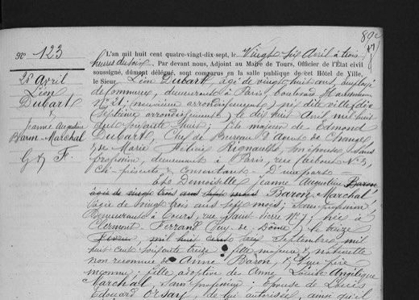
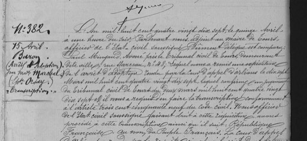

Sosa 3 · Côté Baron-Marchal
Jeanne Augustine Baron Marchal
Née en 1873 à Clermont-FerrandMorte en 1922 à Paris
Mère de René. Couturière.
Récit
Jeanne Augustine naît le 13 septembre 1873 à 23 h à Clermont-Ferrand, au 5 rue Montlosier, domicile de l'accoucheuse Anne Fontbonne, veuve Chassaigne ; la naissance est déclarée le 16. L'acte donne pour mère « Anne Baron », célibataire de 25 ans, native de Lyon, et ne nomme aucun père. Il rapporte la déclaration de l'accoucheuse : il n'établit ni l'existence ni l'âge de cette Anne Baron. Qui est vraiment sa mère n'est pas établi : l'arbre familial, non vérifié, propose Augustine Marchal, mais d'autres pistes restent ouvertes, et le père est inconnu. Où et par qui elle a été élevée entre 1873 et 1897, on ne le sait pas.
En 1897, Anne Louise Angélique Marchal, épouse de Louis Edouard Orsay, l'adopte : le tribunal de Tours admet l'adoption le 2 mars, la cour d'appel d'Orléans confirme le 17 mars, et l'arrêt est transcrit à Tours le 15 avril. La requête parle de « secours ininterrompus depuis son enfance » ; elle ne dit pas qui l'a élevée au quotidien. Les trois vivent à Tours, 7 rue Saint-Pierre, et Jeanne Augustine est alors sans profession.
Le 26 avril 1897, à 15 h, elle épouse à Tours Léon Dubart, sans contrat de mariage. L'acte la dit « fille majeure et naturelle non reconnue » d'Anne Baron et fille adoptive d'Anne Louise Angélique Marchal. Le faire-part des Orsay la nomme pourtant « leur nièce », sans que le mot soit expliqué.
À Paris, elle est couturière en 1900 ; son fils René naît le 19 janvier au 139 rue d'Aboukir. La famille vit ensuite 28 boulevard Bonne-Nouvelle.
Elle meurt dans ce domicile, en 1922. L'acte d'état civil donne le 4 mai à 6 h ; le faire-part et l'acte de mariage de 1923 donnent le 3 mai : la divergence n'est pas résolue. L'acte de décès la dit fille d'Anne Baron, décédée, et fille adoptive d'Anne Louise Angélique Marchal. Le faire-part annonce le service à l'église Saint-Eugène le 6 mai et l'inhumation au cimetière Montmartre ; l'inhumation effective reste à confirmer. Parmi les proches nommés dans ce faire-part figurent des Rignault, des Dubart et les familles Demilly, Degen et Leblanc, sans que les liens soient démontrés.
Restent inconnus : l'identité de ses parents et son enfance.
Récit rédigé le 2 novembre 2026 à partir de la base, qui fait foi. Chaque marque ouvre la preuve du passage.
Famille
Autres liens dits par les actes
- Anne Louise Angélique MARCHAL — mère adoptive
- Louis Edouard ORSAY — oncle
Sa vie dans le temps
- Troisième République
- Jeanne Augustine est née le 13 septembre 1873 à 23 h, à Clermont-Ferrand, au domicile de l'accoucheuse, 5 rue Montlosier. — Clermont-Ferrand vérifié
- Jeanne Augustine est dite née à Clermont-Ferrand le 13/09/1873 [lecture probable de l'année], sans profession. — Clermont-Ferrand vérifié
- La naissance du 13/09/1873 à Clermont-Ferrand concorde entre l'acte de naissance (A0001 : née le 13/09/1873 à 23 h ; déclarée le 16/09) et l'acte de décès de 1922 ; le 16/09/1873 est la date de la déclaration et non de la naissance. — Clermont-Ferrand vérifié
- Événement : Jeanne Augustine est adoptée le 17 Mars 1897 (24 ans) par sa "tante" Anne Louise Angelique MARCHAL, épouse de Louis Edouard ORSAY. — selon l'arbre transmis contredit
- Domicile : 7 rue Saint Pierre, chez Louis ORSAY et Anne MARCHAL sa tante et mère adoptive (Tours, Indre-et-Loire) — selon l'arbre transmis — Tours non vérifié
- Procès-verbal du juge de paix du canton de Tours, 19 février 1897 : Mme Orsay adopte, du consentement de son mari, Mlle Baron, qui accepte. vérifié
- En mars 1897, Anaïs, son mari Louis Edouard Orsay et Jeanne Augustine demeurent tous à Tours, 7 rue Saint-Pierre. — Tours vérifié
- Jugement sur requête du tribunal civil de Tours, 2 mars 1897 : il y a lieu à l'adoption. vérifié
- Arrêt de la cour d'appel d'Orléans, chambre civile, audience publique du mercredi 17 mars 1897 : confirme le jugement ; il y a lieu à l'adoption de Jeanne Augustine Baron par Anne Louise Angélique Marchal, épouse Orsay. vérifié
- En avril 1897, Jeanne Augustine est sans profession et demeure à Tours, 7 rue Saint-Pierre. — Tours vérifié
- Le 15 avril 1897, l'arrêt est transcrit sur les registres de Tours à la requête de Paul Mingaud, avoué près le tribunal civil de Tours. vérifié
- Léon Dubart et Jeanne Augustine Baron Marchal se marient à Tours le 26 avril 1897 à 15 h. — Tours vérifié
- Le faire-part de mariage envoyé de Tours le 27/04/1897 par M. et Mme Edouard Orsay annonce le mariage de Mademoiselle Augustine Baron, « leur nièce », avec Léon Dubart. — Tours partiellement vérifié
- René DUBART est le fils de Léon DUBART (31 ans, caissier) et de Jeanne Augustine BARON MARCHAL (26 ans, couturière), « mariés ». — Paris vérifié
- En janvier 1900, Jeanne Augustine BARON MARCHAL a 26 ans et est « couturière ». — Paris vérifié
- Le faire-part de décès imprimé donne un décès le 3 mai 1922 ; l'acte d'état civil le donne le 4 mai 1922 à six heures : les deux documents ne coïncident pas. — Paris non résolu
- L'acte de mariage de 1923 déclare Léon DUBART « veuf de Jeanne Augustine BARON MARCHAL depuis le 3 mai 1922 ». — Paris partiellement vérifié
- Jeanne Augustine Baron Marchal meurt à Paris (10e arrondissement) le 04/05/1922 à six heures, en son domicile, 28 boulevard Bonne-Nouvelle ; l'acte est dressé le 04/05/1922 à neuf heures. — Paris vérifié
- L'acte de décès de 1922 dit Jeanne Augustine « fille d'Anne Baron décédée » ; aucun père n'est nommé. — Paris vérifié
- L'acte de décès de 1922 dit Jeanne Augustine « fille adoptive de Anne Louise Angélique Marchal » et « épouse de Léon Dubart ». — Paris vérifié
- Le faire-part de 1922 est émis par Léon Dubart « son mari », René Dubart « son fils » et Madame veuve Orsay-Marchal « sa mère » ; la défunte y est nommée « Madame Léon Dubart, née Jeanne Augustine Orsay-Marchal ». — Paris partiellement vérifié
- Le faire-part annonce le convoi, service et enterrement le samedi 06/05/1922 à 10 h en l'église Saint-Eugène (paroisse de la défunte) et l'inhumation au cimetière de Montmartre. — Paris partiellement vérifié
- Le faire-part cite aussi comme parents de la défunte : Monsieur et Madame Eugène Rignault (« oncle et tante »), Monsieur et Madame Maurice Dubart (« cousin-germain et cousine-germaine »), Madame veuve Halouis, André, Jeanne et Cécile Rignault, Monsieur et Madame Charles Dubart, Monsieur et Madame André Baillet (« cousins et cousines »), et les familles Demilly, Degen et Leblanc. — Paris non vérifié
- Inhumation : Cimetière Montmartre (Paris) — selon l'arbre transmis — Paris non vérifié
- À son mariage (1922), René DUBART est dit fils de Léon DUBART, représentant de commerce, présent et consentant, et de Jeanne Augustine BARON MARCHAL, « son épouse, décédée ». — Vincennes vérifié
- Guerre et Libération
- À son décès, Léon DUBART est dit « veuf en premières noces de Jeanne Augustine BARON-MARCHAL, et époux en secondes noces de Solange GASNIER ». — Paris vérifié
Lieux
- Paris 12 mentions
- Tours 6 mentions
- Clermont-Ferrand 4 mentions
Documents (14)




Autres sources citées
- Décès de Jeanne Augustine Baron Marchal, épouse Dubart, Paris 10e, 4 mai 1922 (photocopie conforme délivrée le 17/09/2012) Acte d'état civil · Mairie du 10e arrondissement de Paris · non visible
- Faire-part de décès de Madame Léon Dubart, née Jeanne Augustine Orsay-Marchal (imprimé, Administration spéciale des Funérailles, Maison Henri de Borniol) Document de famille · Famille Robert
- Faire-part de mariage de Mademoiselle Augustine Baron et Léon Dubart, envoyé par M. et Mme Edouard Orsay, Tours, 27 avril 1897 Document de famille · Famille Robert
- Naissance d'Édouard Jean René DUBART, Paris 2e arr., acte dressé le 20/01/1900 (avec mentions marginales de mariage 1922 et de décès 1994) Acte d'état civil · État civil de Paris 2e arr. (dépôt non visible sur l'image)
- Registre matricule de René DUBART, classe de mobilisation 1919 [?], n° matricule 245, liste du 10e arr. de Paris Dossier militaire · Archives de Paris (registres matricules)
- Décès de Léon DUBART, Paris 15e arr., 11/05/1944 (acte dactylographié) Acte d'état civil · Archives de Paris · 15D 399
- Mariage d'Édouard Jean René DUBART et Luce Renée LEBLANC, Vincennes, 24/10/1922 : copie intégrale délivrée le 17/09/2012 Acte d'état civil · Mairie de Vincennes (copie intégrale)
- Mariage de Léon DUBART et Solange GASNIER, Paris 12e arr., 02/06/1923 : photocopie conforme délivrée le 15/06/2011 Acte d'état civil · Mairie du 12e arrondissement de Paris (copie)
- Recensement de Saint-Didier-sur-Beaujeu, 1876, population éparse Recensement · AD Rhône · 6 M 271
Ce qu'on ignore
Aucune enfant prénommée Jeanne ou nommée Baron n'a été repérée dans les listes de 1876 de Saint-Didier-sur-Beaujeu.
recherche infructueuse Lecture rapide des colonnes de noms : résultat négatif mais pas absolu. · A0044
L'identité de la mère de Jeanne Augustine n'est pas établie.
non résolu (a) Augustine Marchal ; (b) Anaïs Marchal ; (c) une Anne Baron réelle, par exemple Marie Anne Jeanne Baron, cousine germaine des sœurs (piste du rapport Heredis, sans dates) ; (d) une femme sans lien avec la famille · A0080
Le père de Jeanne Augustine n'est pas identifié.
recherche infructueuse Les pièces du dossier d'adoption et les documents de la famille n'ont pas été consultés. · A0081
On ne sait pas qui a élevé Jeanne Augustine au quotidien, ni où, entre 1873 et 1897.
non résolu L'absence de l'enfant à Saint-Didier en 1876 n'élimine qu'un foyer ; A0044 repose sur une lecture rapide. · A0082
Le faire-part de décès imprimé donne un décès le 3 mai 1922 ; l'acte d'état civil le donne le 4 mai 1922 à six heures : les deux documents ne coïncident pas.
non résolu Ne pas trancher ; erreur d'impression ou de transcription possible, non démontrée. · A0354
Présence d'Anaïs, d'Augustine ou d'une enfant Jeanne dans les recensements de Lyon (1876-1896)
archives inaccessibles · 2026-10-27 — Non consultés. Pistes : Idem R0001. · R0002
Une enfant Jeanne / Baron à Saint-Didier-sur-Beaujeu en 1876
infructueuse · 2026-10-27 — Aucune enfant correspondante repérée. · R0004
Identité du père de Jeanne Augustine
infructueuse · 2026-10-28 — Aucun des actes consultés ne nomme le père. Pistes : Pièces à l'appui du dossier d'adoption (AD Indre-et-Loire et AD Loiret, série U) ; documents de la famille ; test ADN autosomal de descendants. · R0010
Pièces à l'appui du dossier d'adoption (qui a élevé Jeanne, où)
partiel · 2026-10-28 — Existence attestée ; contenu non consulté. Pistes : Demande écrite : AD Indre-et-Loire série U (jugement du 2 mars 1897, PV du juge de paix du 19 février 1897) ; AD Loiret série U (arrêt du 17 mars 1897). · R0013
Décès de Jeanne Augustine (1922) : date et réseau familial
partiel · 2026-11-02 — Acte du 4 mai à 6 h ; faire-part du 3 mai (AP87, AP93, non tranché) ; la naissance du 13/09/1873 concorde avec l'acte de naissance, le 16/09 étant la date de déclaration (AP89). Réseau cité au faire-part (AP94-AP96). Pistes : Registre journalier d'inhumation de Montmartre mai 1922 ; actes des Halouis, Baillet, Demilly, Degen ; filiation d'Eugène et Maurice. · R0113
Quelle est la date exacte du décès de Jeanne Augustine BARON MARCHAL : 3 mai 1922 (acte de mariage de 1923, faire-part, arbre) ou 4 mai 1922 à 6 h (acte d'état civil n° 10, lot B1) ?
partiel · 2026-11-02 — Discordance non résolue. Le mariage de 1923 déclare Léon veuf « depuis le trois mai mil neuf cent vingt-deux » AP99 ; l'acte de mariage de 1922 la dit seulement décédée ; l'acte de décès (lot B1, hors de cette proposition) donnerait le 4 mai. Le déclarant d'un veuvage peut reprendre une date erronée ; l'acte de décès n'est pas encore intégré dans la base. Ne pas trancher. Pistes : Intégrer l'acte de décès du 10e arr. (lot B1) et son heure ; relire sur l'image la date et l'heure de l'acte ; faire-part de décès (lot B1) ; registre du cimetière de Montmartre (inhumation 6 mai 1922). · R0121
Continuer l'exploration
Dossier complet : toutes les informations et leurs sources
Sosa 3.
Autres noms : Jeanne Augustine BARON (naissance) ; Jeanne Augustine BARON MARCHAL (adoption)
Biographie
Récit rédigé le 2026-11-02 à partir de la base, qui fait foi. Les crochets renvoient aux assertions (onglet Toutes les informations).
Jeanne Augustine naît le 13 septembre 1873 à 23 h à Clermont-Ferrand, au 5 rue Montlosier, domicile de l'accoucheuse Anne Fontbonne, veuve Chassaigne ; la naissance est déclarée le 16. [A0001, A0002, A0350] L'acte donne pour mère « Anne Baron », célibataire de 25 ans, native de Lyon, et ne nomme aucun père. [A0003, A0004] Il rapporte la déclaration de l'accoucheuse : il n'établit ni l'existence ni l'âge de cette Anne Baron. Qui est vraiment sa mère n'est pas établi : l'arbre familial, non vérifié, propose Augustine Marchal, mais d'autres pistes restent ouvertes, et le père est inconnu. [A0080, A0081, AR0209] Où et par qui elle a été élevée entre 1873 et 1897, on ne le sait pas. [A0082]
En 1897, Anne Louise Angélique Marchal, épouse de Louis Edouard Orsay, l'adopte : le tribunal de Tours admet l'adoption le 2 mars, la cour d'appel d'Orléans confirme le 17 mars, et l'arrêt est transcrit à Tours le 15 avril. [A0050, A0051, A0052, A0053, A0006] La requête parle de « secours ininterrompus depuis son enfance » ; elle ne dit pas qui l'a élevée au quotidien. [A0055] Les trois vivent à Tours, 7 rue Saint-Pierre, et Jeanne Augustine est alors sans profession. [A0056, A0014]
Le 26 avril 1897, à 15 h, elle épouse à Tours Léon Dubart, sans contrat de mariage. L'acte la dit « fille majeure et naturelle non reconnue » d'Anne Baron et fille adoptive d'Anne Louise Angélique Marchal. [A0010, A0013, A0015] Le faire-part des Orsay la nomme pourtant « leur nièce », sans que le mot soit expliqué. [A0358]
À Paris, elle est couturière en 1900 ; son fils René naît le 19 janvier au 139 rue d'Aboukir. [A0404, A0402] La famille vit ensuite 28 boulevard Bonne-Nouvelle. [A0412]
Elle meurt dans ce domicile, en 1922. L'acte d'état civil donne le 4 mai à 6 h ; le faire-part et l'acte de mariage de 1923 donnent le 3 mai : la divergence n'est pas résolue. [A0348, A0354, A0458] L'acte de décès la dit fille d'Anne Baron, décédée, et fille adoptive d'Anne Louise Angélique Marchal. [A0351, A0352] Le faire-part annonce le service à l'église Saint-Eugène le 6 mai et l'inhumation au cimetière Montmartre ; l'inhumation effective reste à confirmer. [A0356] Parmi les proches nommés dans ce faire-part figurent des Rignault, des Dubart et les familles Demilly, Degen et Leblanc, sans que les liens soient démontrés. [A0357]
Restent inconnus : l'identité de ses parents et son enfance.
Faits clés
- Naissance : 13/09/1873, Clermont-Ferrand, 5 rue Montlosier — vérifié [A0001]
- Parents : Anne BARON (PN0008) — vérifié [A0003] ; Augustine MARCHAL (P13354) — non vérifié (arbre familial) [AR0209] — les sources ne s'accordent pas, voir Famille
- Mariage : avec Léon DUBART (P5227) — 26/04/1897, Tours — vérifié [A0010]
- Décès : 04/05/1922, Paris 10e, 28 boulevard Bonne-Nouvelle — vérifié [A0348]
- Inhumation : 06/05/1922, Paris — non vérifié (arbre familial) [AR0030]
Versions divergentes (voir Toutes les informations) : naissance AR0026 ; décès AR0029.
Famille
Liens tirés des assertions de la base ; le statut de chaque lien est celui des assertions citées. Les proches plus éloignés sont calculés à partir de ces liens directs.
Parents
- Augustine MARCHAL (P13354) — parent concurrent : les sources ne s'accordent pas, voir les statuts [AR0209 non vérifié]
- Anne BARON (PN0008) — parent concurrent : les sources ne s'accordent pas, voir les statuts [A0003 vérifié, A0013 vérifié, A0351 vérifié]
Conjoint(s)
- Léon DUBART (P5227) — mariage 1897-04-26 [A0010 vérifié, A0355 partiellement vérifié, A0458 partiellement vérifié, A0468 vérifié, AR0170 non vérifié]
Enfants
- Edouard Jean "René" DUBART (P5184) [A0355 partiellement vérifié, A0402 vérifié, A0412 partiellement vérifié, A0451 vérifié, AR0171 non vérifié]
Frères et sœurs
- aucun dans la base.
Proches et alliés (calculés)
Grands-parents
- Prudence BARON (P11900) — par Augustine MARCHAL (P13354) [A0327 vérifié, AR0208 non vérifié, AR0209 non vérifié]
- Nicolas MARCHAL (P11935) — par Augustine MARCHAL (P13354) [A0040 vérifié, A0327 vérifié, AR0208 non vérifié, AR0209 non vérifié]
Oncles et tantes
- Anne Louise Angélique MARCHAL (PN0001) — frère ou sœur de Augustine MARCHAL (P13354) [A0040 vérifié, A0041 vérifié, A0327 vérifié, A0338 vérifié, AR0208 non vérifié, AR0209 non vérifié]
Oncles et tantes par alliance
- Louis Edouard ORSAY (PN0002) — conjoint de Anne Louise Angélique MARCHAL (PN0001) [A0006 vérifié, A0040 vérifié, A0041 vérifié, A0050 vérifié, A0052 vérifié, A0056 vérifié, A0327 vérifié, A0334 vérifié, A0338 vérifié, A0342 partiellement vérifié, AR0208 non vérifié, AR0209 non vérifié]
Beaux-parents
- Edmond DUBART (P5232) — parent de Léon DUBART (P5227) [A0010 vérifié, A0355 partiellement vérifié, A0359 partiellement vérifié, A0388 vérifié, A0389 partiellement vérifié, A0394 partiellement vérifié, A0458 partiellement vérifié, A0459 vérifié, A0468 vérifié, A0469 vérifié, AR0170 non vérifié, AR0179 non vérifié]
- Marie Félicie RIGNAULT (P5234) — parent de Léon DUBART (P5227) [A0010 vérifié, A0355 partiellement vérifié, A0359 partiellement vérifié, A0371 partiellement vérifié, A0388 vérifié, A0391 vérifié, A0394 partiellement vérifié, A0458 partiellement vérifié, A0459 vérifié, A0468 vérifié, A0469 vérifié, AR0170 non vérifié, AR0179 non vérifié]
Beaux-frères et belles-sœurs
- Marcel Jean DUBART (PN0003) — frère ou sœur de Léon DUBART (P5227) [A0010 vérifié, A0355 partiellement vérifié, A0359 partiellement vérifié, A0371 partiellement vérifié, A0388 vérifié, A0389 partiellement vérifié, A0391 vérifié, A0394 partiellement vérifié, A0458 partiellement vérifié, A0459 vérifié, A0468 vérifié, A0469 vérifié, A0724 vérifié, AR0170 non vérifié, AR0179 non vérifié]
Gendres et belles-filles
- Luce "Renée" LEBLANC (P5187) — conjoint de Edouard Jean "René" DUBART (P5184) [A0355 partiellement vérifié, A0402 vérifié, A0408 vérifié, A0412 partiellement vérifié, A0449 vérifié, A0451 vérifié, A0456 partiellement vérifié, AR0164 non vérifié, AR0165 non vérifié, AR0171 non vérifié]
Petits-enfants
- Annie Marguerite Jeannine DUBART (PN0051) — par Edouard Jean "René" DUBART (P5184) [A0355 partiellement vérifié, A0402 vérifié, A0412 partiellement vérifié, A0451 vérifié, A0471 vérifié, A0473 vérifié, AR0171 non vérifié]
Autres parentés dites par les actes
- Anne Louise Angélique MARCHAL (PN0001) — mère adoptive [A0006 vérifié, A0013 vérifié, A0050 vérifié, A0051 vérifié, A0052 vérifié, A0053 vérifié, A0352 vérifié, A0355 partiellement vérifié]
- Louis Edouard ORSAY (PN0002) — oncle [A0358 partiellement vérifié]
Autres personnes citées dans les mêmes actes (sans parenté établie)
- Solange GASNIER (P5241) — conjoint de Léon DUBART (P5227) [A0468 vérifié]
- Anne FONTBONNE (PN0004) — déclarant, sujet [A0002 vérifié, A0007 vérifié]
Toutes les informations
-
[A0001] vérifié · fait attesté · confiance forte — Jeanne Augustine est née le 13 septembre 1873 à 23 h, à Clermont-Ferrand, au domicile de l'accoucheuse, 5 rue Montlosier.
- Limite : Le lieu est déduit de « né dans son domicile » (domicile de la comparante) ; l'acte ne dit pas qui a fait l'accouchement ; n°5 : lecture probable.
- Sources : S0001
-
[A0349] vérifié · transcription · confiance moyenne — Jeanne Augustine est dite née à Clermont-Ferrand le 13/09/1873 [lecture probable de l'année], sans profession.
- Limite : Déclaration du mari.
- Sources : S0181
- [A0350] vérifié · recoupement · confiance forte — La naissance du 13/09/1873 à Clermont-Ferrand concorde entre l'acte de naissance (A0001 : née le 13/09/1873 à 23 h ; déclarée le 16/09) et l'acte de décès de 1922 ; le 16/09/1873 est la date de la déclaration et non de la naissance.
-
[A0050] vérifié · transcription · confiance forte — Procès-verbal du juge de paix du canton de Tours, 19 février 1897 : Mme Orsay adopte, du consentement de son mari, Mlle Baron, qui accepte.
- Limite : Le procès-verbal et le jugement eux-mêmes n'ont pas été consultés : ils sont connus par la transcription de l'arrêt. Lecture incertaine en fin de ligne : « canton de Tours, ce[ntre ?] ».
- Sources : S0008
- [A0056] vérifié · fait attesté · confiance forte — En mars 1897, Anaïs, son mari Louis Edouard Orsay et Jeanne Augustine demeurent tous à Tours, 7 rue Saint-Pierre.
-
[A0051] vérifié · transcription · confiance forte — Jugement sur requête du tribunal civil de Tours, 2 mars 1897 : il y a lieu à l'adoption.
- Limite : Le procès-verbal et le jugement eux-mêmes n'ont pas été consultés : ils sont connus par la transcription de l'arrêt.
- Sources : S0008
-
[A0052] vérifié · transcription · confiance forte — Arrêt de la cour d'appel d'Orléans, chambre civile, audience publique du mercredi 17 mars 1897 : confirme le jugement ; il y a lieu à l'adoption de Jeanne Augustine Baron par Anne Louise Angélique Marchal, épouse Orsay.
- Sources : S0008
-
[A0014] vérifié · fait attesté · confiance forte — En avril 1897, Jeanne Augustine est sans profession et demeure à Tours, 7 rue Saint-Pierre.
- Sources : S0002
-
[A0053] vérifié · transcription · confiance forte — Le 15 avril 1897, l'arrêt est transcrit sur les registres de Tours à la requête de Paul Mingaud, avoué près le tribunal civil de Tours.
- Sources : S0008
-
[A0010] vérifié · fait attesté · confiance forte — Léon Dubart et Jeanne Augustine Baron Marchal se marient à Tours le 26 avril 1897 à 15 h.
- Sources : S0002
-
[A0358] partiellement vérifié · transcription · confiance moyenne — Le faire-part de mariage envoyé de Tours le 27/04/1897 par M. et Mme Edouard Orsay annonce le mariage de Mademoiselle Augustine Baron, « leur nièce », avec Léon Dubart.
- Limite : À cette date Augustine avait été adoptée (arrêt du 17/03/1897, A0052) par Mme Orsay : le faire-part dit « nièce ». Aucune explication documentée de ce terme ; le faire-part est du lendemain de l'acte de mariage (26/04/1897, A0010).
- Possibilités : Nièce par alliance ou par lien Baron / Marchal non établi : à chercher.
- Sources : S0183
- [A0402] vérifié · fait attesté · confiance forte — René DUBART est le fils de Léon DUBART (31 ans, caissier) et de Jeanne Augustine BARON MARCHAL (26 ans, couturière), « mariés ».
- [A0404] vérifié · fait attesté · confiance moyenne — En janvier 1900, Jeanne Augustine BARON MARCHAL a 26 ans et est « couturière ».
- [A0354] non résolu · recoupement · confiance faible — Le faire-part de décès imprimé donne un décès le 3 mai 1922 ; l'acte d'état civil le donne le 4 mai 1922 à six heures : les deux documents ne coïncident pas.
- [A0458] partiellement vérifié · fait attesté · confiance moyenne — L'acte de mariage de 1923 déclare Léon DUBART « veuf de Jeanne Augustine BARON MARCHAL depuis le 3 mai 1922 ».
-
[A0348] vérifié · transcription · confiance forte — Jeanne Augustine Baron Marchal meurt à Paris (10e arrondissement) le 04/05/1922 à six heures, en son domicile, 28 boulevard Bonne-Nouvelle ; l'acte est dressé le 04/05/1922 à neuf heures.
- Limite : Voir AP93 pour la date de 3 mai du faire-part.
- Sources : S0181
- [A0351] vérifié · transcription · confiance moyenne — L'acte de décès de 1922 dit Jeanne Augustine « fille d'Anne Baron décédée » ; aucun père n'est nommé.
-
[A0352] vérifié · transcription · confiance forte — L'acte de décès de 1922 dit Jeanne Augustine « fille adoptive de Anne Louise Angélique Marchal » et « épouse de Léon Dubart ».
- Sources : S0181
-
[A0355] partiellement vérifié · transcription · confiance moyenne — Le faire-part de 1922 est émis par Léon Dubart « son mari », René Dubart « son fils » et Madame veuve Orsay-Marchal « sa mère » ; la défunte y est nommée « Madame Léon Dubart, née Jeanne Augustine Orsay-Marchal ».
- Limite : « Sa mère » désigne la mère adoptive d'après l'acte de 1922 ; la filiation de René n'est pas établie par cette pièce (voir son acte de naissance, lot B2).
- Sources : S0182
-
[A0356] partiellement vérifié · transcription · confiance moyenne — Le faire-part annonce le convoi, service et enterrement le samedi 06/05/1922 à 10 h en l'église Saint-Eugène (paroisse de la défunte) et l'inhumation au cimetière de Montmartre.
- Limite : L'inhumation effective sera à confirmer par le registre du cimetière (cf. concession 542).
- Possibilités : Registre journalier d'inhumation, Montmartre, mai 1922 (Archives de Paris).
- Sources : S0182
-
[A0357] non vérifié · transcription · confiance faible — Le faire-part cite aussi comme parents de la défunte : Monsieur et Madame Eugène Rignault (« oncle et tante »), Monsieur et Madame Maurice Dubart (« cousin-germain et cousine-germaine »), Madame veuve Halouis, André, Jeanne et Cécile Rignault, Monsieur et Madame Charles Dubart, Monsieur et Madame André Baillet (« cousins et cousines »), et les familles Demilly, Degen et Leblanc.
- Limite : Statuts des liens non démontrés : à documenter par la généalogie Rignault et Dubart. Les familles Demilly, Degen et Leblanc sont citées sans précision.
- Sources : S0182
- [A0451] vérifié · fait attesté · confiance forte — À son mariage (1922), René DUBART est dit fils de Léon DUBART, représentant de commerce, présent et consentant, et de Jeanne Augustine BARON MARCHAL, « son épouse, décédée ».
- [A0468] vérifié · fait attesté · confiance forte — À son décès, Léon DUBART est dit « veuf en premières noces de Jeanne Augustine BARON-MARCHAL, et époux en secondes noces de Solange GASNIER ».
- [A0002] vérifié · fait attesté · confiance forte — La naissance est déclarée le 16 septembre 1873 par Anne Fontbonne, veuve Chassaigne, accoucheuse, déclarée âgée de 37 ans, rue Montlosier n°5.
-
[A0003] vérifié · transcription · confiance forte — L'acte de 1873 désigne comme mère « Anne Baron, célibataire, âgée de vingt-cinq ans, native de Lyon (Rhône) y demeurant ».
- Limite : L'acte rapporte une déclaration de la sage-femme ; il n'établit pas qu'Anne Baron existe, ni qu'elle a 25 ans ou vient de Lyon.
- Sources : S0001
-
[A0004] vérifié · fait attesté · confiance forte — L'acte de naissance de 1873 ne nomme aucun père.
- Sources : S0001
-
[A0005] vérifié · transcription · confiance moyenne — Témoins de l'acte de 1873 : Jean Fauchet [lecture incertaine], serrurier, 50 ans, et Antoine Bayle, maçon, 39 ans, non parents de l'enfant, ne sachant signer.
- Sources : S0001
-
[A0006] vérifié · fait attesté · confiance forte — Mention marginale de 1897 : Jeanne Augustine Baron a été adoptée par Anne Louise Angélique Marchal, épouse Orsay, par arrêt de la cour d'appel d'Orléans du 17 mars 1897, transcrit à Tours le 15 avril 1897 ; mention faite le 22 avril 1897.
- Sources : S0001
- [A0007] vérifié · fait attesté · confiance forte — L'accoucheuse de 1873 est une femme, Anne Fontbonne veuve Chassaigne, et non un « Dr Fontbonne » comme l'indique la note de l'arbre.
-
[A0013] vérifié · transcription · confiance forte — L'acte de mariage qualifie Jeanne de « fille majeure et naturelle non reconnue de Anne Baron, et d'un père inconnu ; fille adoptive de Anne Louise Angélique Marchal ».
- Sources : S0002
-
[A0015] vérifié · fait attesté · confiance forte — Le mariage de 1897 est célébré sans contrat de mariage.
- Sources : S0002
-
[A0016] vérifié · transcription · confiance moyenne — Témoins du mariage de 1897, dits amis : Augustin Beaud (24 ans, négociant, Paris, 15 rue du Sentier), Stanislas Verna (46 ans, chef de bureau à la mairie de Tours, rue Colbert 67), Charles Gérard (73 ans, rentier, 4 rue des Acacias), Jules [lecture incertaine] Buravant (44 ans, employé au chemin de fer d'Orléans, rue des Acacias).
- Sources : S0002
-
[A0017] vérifié · fait attesté · confiance forte — L'acte de mariage de 1897 porte en marge « Rayé : treize mots nuls » : le nom « Baron » a été réécrit « Baron Marchal », l'âge recopié à l'identique, le mois de naissance « février » corrigé en « septembre ».
- Limite : Correction ordinaire de rédaction ; ne constitue pas un indice de dissimulation.
- Sources : S0002
-
[A0019] partiellement vérifié · fait attesté · confiance moyenne — Augustine Marchal n'apparaît pas dans l'acte de mariage de 1897.
- Limite : Corps de l'acte vérifié ; bloc des signatures incomplet sur l'image locale. Une absence dans un acte n'établit ni un décès, ni une ignorance, ni une brouille.
- Sources : S0002
- [A0044] recherche infructueuse · fait attesté · confiance faible — Aucune enfant prénommée Jeanne ou nommée Baron n'a été repérée dans les listes de 1876 de Saint-Didier-sur-Beaujeu.
-
[A0055] vérifié · transcription · confiance forte — La requête déclare que l'adoptante a fourni à Jeanne Augustine « des secours ininterrompus depuis son enfance jusqu'à ce jour ».
- Limite : Formule qui reprend la condition légale (art. 345) ; ne dit ni où ni avec qui l'enfant a vécu, ni qui l'a élevée au quotidien. La requête recopiée ne parle que de « secours », pas des « soins » exigés par l'article 345 ; ils figurent peut-être dans le procès-verbal ou les pièces non recopiés (non vérifié).
- Sources : S0008
-
[A0058] vérifié · fait attesté · confiance forte — Des « pièces à l'appui » ont été produites au procureur de la République de Tours ; elles ne sont pas recopiées dans la transcription.
- Sources : S0008
- [A0080] non résolu · hypothèse · confiance faible — L'identité de la mère de Jeanne Augustine n'est pas établie.
- [A0081] recherche infructueuse · fait attesté · confiance forte — Le père de Jeanne Augustine n'est pas identifié.
-
[A0082] non résolu · hypothèse · confiance faible — On ne sait pas qui a élevé Jeanne Augustine au quotidien, ni où, entre 1873 et 1897.
- Limite : L'absence de l'enfant à Saint-Didier en 1876 n'élimine qu'un foyer ; A0044 repose sur une lecture rapide.
- Possibilités : Mise en nourrice ; éducation par la mère réelle hors du foyer des grands-parents ; pension ; placement avec pension payée par Anaïs (sens premier de « secours ») — toutes non vérifiées.
- Sources : S0008, S0006
-
[A0412] partiellement vérifié · transcription · confiance moyenne — À l'inscription sur la liste, René DUBART est étudiant, résidant avec ses parents 28 boulevard Bonne-Nouvelle (Paris, 10e arr.).
- Limite : Mention du domicile des parents : la mère y est dite avec le nom « Baron Marchal Jeanne Augustine ».
- Sources : S0197
- [A0452] vérifié · fait attesté · confiance moyenne — Dans l'acte de mariage du 24/10/1922, Jeanne Augustine BARON MARCHAL est déclarée décédée.
- [AR0026] contredit · rapporté par un tiers · confiance faible — naissance ; 1873-09-13 ; Clermont-Ferrand, Puy-de-Dôme — note de l'arbre : Jeanne Augustine est née au domicile du Dr Fontbonne, accoucheuse, 5 rue Montlozier à Clermont-Ferrand. Selon son acte de naissance, son père est inconnue et sa mère est Anne BARON, "agée de 25 ans, habitante et native de Lyon".
- [AR0027] contredit · rapporté par un tiers · confiance faible — evenement ; 1897 — note de l'arbre : Jeanne Augustine est adoptée le 17 Mars 1897 (24 ans) par sa "tante" Anne Louise Angelique MARCHAL, épouse de Louis Edouard ORSAY.
-
[AR0028] non vérifié · rapporté par un tiers · confiance faible — evenement:Residence ; 1897 ; Tours, Indre-et-Loire — note de l'arbre : 7 rue Saint Pierre, chez Louis ORSAY et Anne MARCHAL sa tante et mère adoptive
- Sources : S-ARBRE
-
[AR0170] non vérifié · rapporté par un tiers · confiance faible — mariage ; 1897-04-26 ; Tours, Indre-et-Loire, Centre — note de l'arbre : Le faire part de mariage (établi avant l'adoption) indique que M et Mme ORSAY sont heureux de faire part du mariage de leur nièce Jeanne Augustine.
- Sources : S-ARBRE
-
[AR0029] non vérifié · rapporté par un tiers · confiance faible — deces ; 1922-05-03 ; Paris, 10ème — note de l'arbre : décédée en son domicile 28 boulevard Bonne-Nouvelle
- Sources : S-ARBRE
-
[AR0030] non vérifié · rapporté par un tiers · confiance faible — inhumation ; 1922-05-06 ; Paris — note de l'arbre : Cimetière Montmartre
- Sources : S-ARBRE
-
[AR0025] non vérifié · rapporté par un tiers · confiance faible — profession ; Couturière
- Sources : S-ARBRE
- [AR0171] non vérifié · rapporté par un tiers · confiance faible — filiation : Edouard Jean "René" DUBART (P5184) enfant de Léon DUBART (P5227) et Jeanne Augustine BARON MARCHAL (P5229)
-
[AR0209] non vérifié · rapporté par un tiers · confiance faible — filiation : Jeanne Augustine BARON MARCHAL (P5229) enfant de Augustine MARCHAL (P13354)
- Sources : S-ARBRE
Recherches menées
- [R0002] Présence d'Anaïs, d'Augustine ou d'une enfant Jeanne dans les recensements de Lyon (1876-1896) — inaccessible : Non consultés. Pistes : Idem R0001.
- [R0004] Une enfant Jeanne / Baron à Saint-Didier-sur-Beaujeu en 1876 — infructueuse : Aucune enfant correspondante repérée.
- [R0007] Transcription de l'adoption à Tours (15 avril 1897) — trouve : Transcription n°382 lue en entier.
- [R0010] Identité du père de Jeanne Augustine — infructueuse : Aucun des actes consultés ne nomme le père. Pistes : Pièces à l'appui du dossier d'adoption (AD Indre-et-Loire et AD Loiret, série U) ; documents de la famille ; test ADN autosomal de descendants.
- [R0013] Pièces à l'appui du dossier d'adoption (qui a élevé Jeanne, où) — partiel : Existence attestée ; contenu non consulté. Pistes : Demande écrite : AD Indre-et-Loire série U (jugement du 2 mars 1897, PV du juge de paix du 19 février 1897) ; AD Loiret série U (arrêt du 17 mars 1897).
- [R0113] Décès de Jeanne Augustine (1922) : date et réseau familial — partiel : Acte du 4 mai à 6 h ; faire-part du 3 mai (AP87, AP93, non tranché) ; la naissance du 13/09/1873 concorde avec l'acte de naissance, le 16/09 étant la date de déclaration (AP89). Réseau cité au faire-part (AP94-AP96). Pistes : Registre journalier d'inhumation de Montmartre mai 1922 ; actes des Halouis, Baillet, Demilly, Degen ; filiation d'Eugène et Maurice.
- [R0121] Quelle est la date exacte du décès de Jeanne Augustine BARON MARCHAL : 3 mai 1922 (acte de mariage de 1923, faire-part, arbre) ou 4 mai 1922 à 6 h (acte d'état civil n° 10, lot B1) ? — partiel : Discordance non résolue. Le mariage de 1923 déclare Léon veuf « depuis le trois mai mil neuf cent vingt-deux » AP99 ; l'acte de mariage de 1922 la dit seulement décédée ; l'acte de décès (lot B1, hors de cette proposition) donnerait le 4 mai. Le déclarant d'un veuvage peut reprendre une date erronée ; l'acte de décès n'est pas encore intégré dans la base. Ne pas trancher. Pistes : Intégrer l'acte de décès du 10e arr. (lot B1) et son heure ; relire sur l'image la date et l'heure de l'acte ; faire-part de décès (lot B1) ; registre du cimetière de Montmartre (inhumation 6 mai 1922).
Sources citées
- S-ARBRE — Arbre Heredis « Généalogie DUBART René », export GEDCOM (consultee)
- S-RAPPORT — Rapport d'ascendance Heredis de René DUBART (5 générations) (consultee)
- S0001 — Naissance de Jeanne Augustine (Baron), Clermont-Ferrand, 16 septembre 1873 (consultee, 6 E 113 109, vues 151-152)
- S0002 — Mariage Léon DUBART × Jeanne Augustine BARON MARCHAL, Tours, 26 avril 1897 (consultee, 6NUM8/261/331, vues 89-90)
- S0005 — Recensement de Saint-Didier-sur-Beaujeu, 1872, agglomération (consultee, 6 M 235, vues 5)
- S0006 — Recensement de Saint-Didier-sur-Beaujeu, 1876, agglomération (consultee, 6 M 271, vues 6)
- S0007 — Recensement de Saint-Didier-sur-Beaujeu, 1876, population éparse (consultee, 6 M 271, vues 1-9)
- S0008 — Transcription de l'arrêt d'adoption (Baron, par Marchal épouse Orsay), Tours, 15 avril 1897 (consultee, 6NUM8/261/330, vues 312-313)
- S0181 — Décès de Jeanne Augustine Baron Marchal, épouse Dubart, Paris 10e, 4 mai 1922 (photocopie conforme délivrée le 17/09/2012) (consultee, non visible)
- S0182 — Faire-part de décès de Madame Léon Dubart, née Jeanne Augustine Orsay-Marchal (imprimé, Administration spéciale des Funérailles, Maison Henri de Borniol) (consultee)
- S0183 — Faire-part de mariage de Mademoiselle Augustine Baron et Léon Dubart, envoyé par M. et Mme Edouard Orsay, Tours, 27 avril 1897 (consultee)
- S0195 — Naissance d'Édouard Jean René DUBART, Paris 2e arr., acte dressé le 20/01/1900 (avec mentions marginales de mariage 1922 et de décès 1994) (consultee)
- S0197 — Registre matricule de René DUBART, classe de mobilisation 1919 [?], n° matricule 245, liste du 10e arr. de Paris (consultee)
- S0199 — Décès de Léon DUBART, Paris 15e arr., 11/05/1944 (acte dactylographié) (consultee, 15D 399)
- S0205 — Mariage d'Édouard Jean René DUBART et Luce Renée LEBLANC, Vincennes, 24/10/1922 : copie intégrale délivrée le 17/09/2012 (consultee)
- S0207 — Mariage de Léon DUBART et Solange GASNIER, Paris 12e arr., 02/06/1923 : photocopie conforme délivrée le 15/06/2011 (consultee)